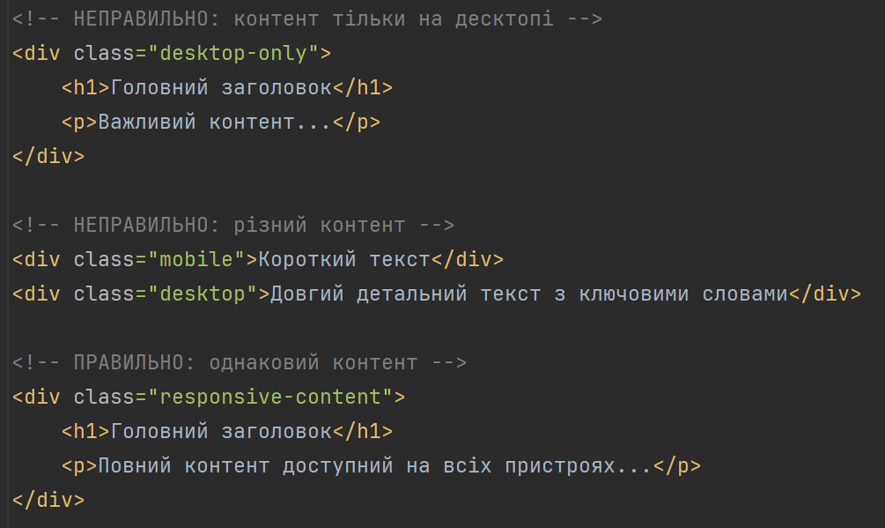
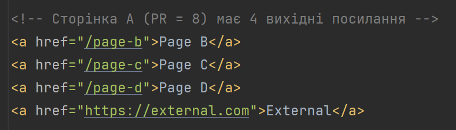
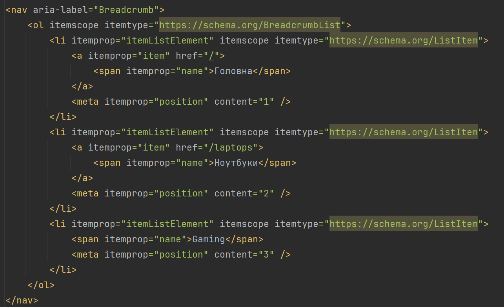
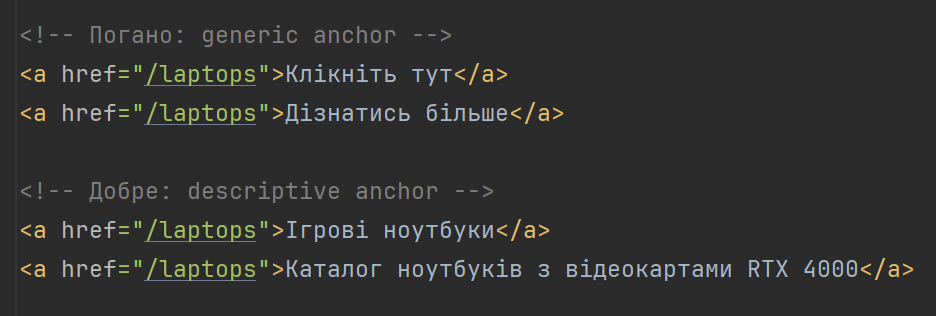

Лекція 2. Індексація та алгоритми Google
План лекції:
- Типи пошукових ботів
- Механізм індексації сторінок і посилань
- Алгоритми Google: Panda, Penguin, BERT, Helpful Content
- Core Web Vitals та EEAT
Екосистема пошукових ботів Google
Основні боти Google:
- Googlebot Desktop
- Googlebot Smartphone
- Googlebot Image
- Googlebot Video
- GoogleOther
Екосистема пошукових ботів Google
Googlebot Desktop
- User-agent: Mozilla/5.0 (compatible; Googlebot/2.1; +http://www.google.com/bot.html)
- Емулює десктоп-браузер
- Стандартний viewport: 1920x1080px
Googlebot Smartphone
- User-agent: Mozilla/5.0 (Linux; Android 6.0.1; Nexus 5X Build/MMB29P) AppleWebKit/537.36 (KHTML, like
Gecko) Chrome/W.X.Y.Z Mobile Safari/537.36 (compatible; Googlebot/2.1; +http://www.google.com/bot.html)
- Емулює мобільний пристрій
- Viewport: 412x732px
Екосистема пошукових ботів Google
Googlebot Image
- Індексує зображення
- Читає alt-атрибути, file names, surrounding text
Googlebot Video
- Індексує відео-контент
- Підтримує VideoObject schema
GoogleOther
- Експериментальний бот для нових функцій
- Може не підкорятися robots.txt
Mobile-First Indexing (2019-)
Що змінилося:
До 2019 року:
- Google спочатку індексував десктопну версію
- Потім перевіряв мобільну
Після 2019 року:
- Google індексує спочатку мобільну версію
- Тому дані для ранжування часто беруться з mobile-версії
Індекс у Google один - не існує окремого mobile і desktop індексу.
Якщо сайт взагалі не має мобільної версії, Google все одно може індексувати desktop-версію.
Mobile-First Indexing (2019-)
Практичний висновок для SEO
Сьогодні правило таке:
- Mobile version = основне джерело для SEO
- Desktop має бути еквівалентним, але він не є основним джерелом сигналів.
Найкраща практика:
- Responsive сайт (один HTML)
- Однаковий контент на mobile і desktop
Mobile-First Indexing (2019-)
Критичні помилки:

Статистика:
- 63% всіх пошуків відбувається з мобільних
- 73% мобільних користувачів залишають сайт, якщо він не адаптований
Інші популярні боти
- Bingbot (Microsoft Bing) - User-agent: Mozilla/5.0 (compatible; bingbot/2.0;
+http://www.bing.com/bingbot.htm
- DuckDuckBot (DuckDuckGo) - User-agent: DuckDuckBot/1.0; (+http://duckduckgo.com/duckduckbot.html)
- AhrefsBot - SEO-інструмент для аналізу backlinks
- SemrushBot - SEO-аналітика
- FacebookExternalHit - превʼю посилань у Facebook
- Twitterbot - превʼю для Twitter/X
Керування ботами через robots.txt
Базовий приклад:
# Дозволити всім ботам все
User-agent: *
Allow: /
# Заборонити сканування адмінки
Disallow: /admin/
Disallow: /private/
Disallow: /api/internal/
# Дозволити сканування публічного API
Allow: /api/public/
# Заборонити сканування динамічних параметрів
Disallow: /*?sort=
Disallow: /*?filter=
Disallow: /*&sessionid=
# Sitemap
Sitemap: https://example.com/sitemap.xml
Специфічні правила для різних ботів:
# Заборонити AhrefsBot (економимо crawl budget)
User-agent: AhrefsBot
Disallow: /
# Дозволити тільки Googlebot для певної секції
User-agent: *
Disallow: /beta/
User-agent: Googlebot
Allow: /beta/
Важливо: robots.txt - це рекомендація, не захист! Для реального захисту слід використовувати
authentication.
Процес індексації - крок за кроком
Етап 1: Discovery (Виявлення)
Джерела URL:
- Sitemap.xml
- Internal links (посилання на сайті)
- External backlinks (посилання з інших сайтів)
- URL Submission (через Search Console)
- Chrome browsing data (якщо користувач увійшов в акаунт Google)
Процес індексації - крок за кроком
Етап 2: Crawling (Сканування)
Псевдокод роботи Googlebot
- Перевірити robots.txt
- Зробити HTTP-запит
- Перевірити статус (200, 404, 503)
- Перевірити redirect (301, 302)
Процес індексації - крок за кроком
Етап 3: Rendering (Рендеринг JavaScript)
- HTML завантажено
- Чекаємо JavaScript (до 5 секунд)
- Виконуємо JS, будуємо DOM
- Екстрагуємо фінальний контент
Процес індексації - крок за кроком
Етап 4: Indexing (Індексація) + Аналіз контенту
- Мова сторінки
- Регіон (hreflang)
- Ключові слова
- Structured Data (Schema.org)
- Мета-теги (title, description)
- Заголовки (H1-H6)
- Alt-текст зображень
- Внутрішні та зовнішні посилання
Механізм індексації посилань
Link Equity (передача ваги) - це SEO-поняття, яке описує цінність, авторитетність та «вагу», що
передаються з
однієї сторінки на іншу через гіперпосилання. Це свого роду «цифровий голос довіри», який впливає на ранжування
в пошукових системах. Висока якість посилань важливіша за їх кількість, а самі посилання можуть бути як
внутрішніми, так і зовнішніми.
Концепція PageRank:
- Сайт A (PageRank: 8/10) посилається на Сайт B
- Сайт B отримує частину авторитетності від A
- PageRank Сайту B зростає
Механізм індексації посилань
Формула передачі ваги:
PageRank(B) = (1-d) + d × Σ(PageRank(A) / OutboundLinks(A)), де:
d = damping factor (0.85)
OutboundLinks = кількість вихідних посилань на сторінці

Кожне посилання передає: 8 / 4 = 2 пункти PageRank
Page B отримує: 0.15 + 0.85 × 2 = 1.85 пунктів
Типи посилань та їх вплив
- Dofollow (за замовчуванням)
- Nofollow
- Sponsored
- UGC (User Generated Content)
- Internal Links (Внутрішні)
- Комбінації (rel='nofollow noopener noreferrer')
Типи посилань та їх вплив
Dofollow (за замовчуванням)
- Передає Link Juice (вагу)
- Враховується в PageRank
- Рекомендує Google перейти за посиланням
<a href="https://example.com">Link</a>
Типи посилань та їх вплив
Nofollow
- НЕ передає вагу (офіційно з 2009)
- З 2019 року Google може враховувати як "підказку"
- Використовується для: коментарів, платних посилань, ненадійного контенту
<a href="https://example.com" rel="nofollow">Link</a>
Типи посилань та їх вплив
Sponsored
- Позначає платні/рекламні посилання
- Додано в 2019 році
- НЕ передає вагу
<a href="https://example.com" rel="sponsored">Реклама</a>
Типи посилань та їх вплив
UGC (User Generated Content)
- Для посилань від користувачів (коментарі, форуми)
- Додано в 2019 році
- НЕ передає вагу
<a href="https://example.com" rel="ugc">User link</a>
Типи посилань та їх вплив
Internal Links (Внутрішні)
- Розподіляють вагу всередині сайту
- Допомагають Google зрозуміти структуру
- Критично важливі для SEO
<a href="/category/products" rel="ugc">Наші продукти</a>
Внутрішня перелінковка - архітектура сайту
Правильна структура:
-
Homepage (PR: 10)
-
Category 1 (PR: 8)
- Product 1.1 (PR: 6)
- Product 1.2 (PR: 6)
- Product 1.3 (PR: 6)
-
Category 2 (PR: 8)
- Product 2.1 (PR: 6)
- Product 2.2 (PR: 6)
-
Blog (PR: 7)
- Article 1 (PR: 5)
- Article 2 (PR: 5)
Внутрішня перелінковка - архітектура сайту
Breadcrumbs (хлібні крихти):

Внутрішня перелінковка - архітектура сайту
Anchor text (текст посилання):

Sitemap.xml - структурована мапа сайту
Sitemap.xml - це спеціальний XML-файл, який містить структурований список сторінок вебсайту та
інформацію
про них, призначений насамперед для пошукових систем, щоб вони могли ефективніше знаходити, сканувати та
індексувати сторінки сайту.
Основні характеристики Sitemap.xml
- містить URL-адреси сторінок сайту
- може включати дату останнього оновлення сторінки
- може вказувати частоту оновлення сторінки (changefreq)
- може задавати пріоритет сторінки відносно інших (priority)
- допомагає пошуковим системам краще зрозуміти структуру сайту
Базовий приклад
Google Panda (2011) - боротьба з low-quality контентом
23 лютого 2011 року Google запустив оновлення, яке вплинуло на 12% пошукових запитів. Сайти з низькоякісним
контентом втратили 50-95% трафіку за одну ніч.
Цілі Panda:
- Content farms (ферми контенту) - сайти з величезною кількістю поверхневих статей
- Thin content (порожній контент) - сторінки без реальної цінності
- Duplicate content (дублікати)
- Low-quality content (низька якість)
Google Panda (2011) - боротьба з low-quality контентом
Що оцінює Panda:
Погані сигнали:
- Багато реклами над контентом (Above the fold)
- Граматичні та орфографічні помилки
- Короткий, поверхневий контент (< 300 слів)
- Автоматично згенерований контент
- Дублювання контенту з інших сайтів
- Відсутність автора, дати публікації
- Висока bounce rate, низький час на сторінці
Хороші сигнали:
- Оригінальний, корисний контент (> 1000 слів для важливих тем)
- Експертність, дослідження, унікальні дані
- Регулярні оновлення контенту
- Низька bounce rate, високий engagement
- Соціальні сигнали (shares, likes)
Приклад
Google Penguin (2012) - боротьба зі спамом посилань
Запуск: 24 квітня 2012 року
Цілі Penguin:
- Link schemes (схеми посилань)
- Купівля посилань
- Link farms
- Over-optimization (надмірна оптимізація anchor text)
- PBN (Private Blog Networks)
Що каралося:
- Сайт A купує 10,000 посилань на біржах
- Anchor text: "купити ноутбук" (100% точний збіг)
- Посилання з низькоякісних сайтів
- Google Penguin: -60% трафіку
Google Penguin (2012) - боротьба зі спамом посилань
Приклад токсичного профілю посилань (Backlinks Profile):
- 5,000 посилань з форумів (підписи)
- 3,000 посилань з коментарів блогів
- 2,000 посилань з каталогів
- 95% anchor text: точна ключова фраза
- Domain Diversity: низька (ті самі домени)
- Результат: Manual penalty + падіння позицій
Здоровий профіль посилань (Backlinks Profile (після Penguin)):
- Новинні сайти: 10%
- Блоги в тематиці: 20%
- Партнери та клієнти: 15%
- Соціальні мережі: 25%
- Органічні згадки: 30%
Google Hummingbird (2013) - semantic search
Запуск: Серпень 2013 року (анонсовано вересень)
Революція в пошуку:
- Від keyword matching до semantic understanding
- Розуміння НАМІРУ запиту, а не просто слів
- Врахування контексту та синонімів
До Hummingbird:
- Запит: "найвища будівля світу"
- Google шукає: сторінки з точним збігом слів
Після Hummingbird:
- Запит: "найвища будівля світу"
- Google розуміє:
- Користувач хоче знати НАЗВУ будівлі
- Очікується: Burj Khalifa, 828 метрів
- Пов'язані концепції: хмарочоси, архітектура, Дубай
- Google зберігає контекст пошуку
Google RankBrain (2015) - Machine Learning
Запуск: Жовтень 2015 року
RankBrain - алгоритм машинного навчання, який допомагає Google обробляти запити, які
він раніше не бачив (15%
всіх запитів - нові).
Новий запит: "чому мій макбук швидко розряджається після оновлення"
RankBrain аналізує:
- "швидко розряджається" = проблема з батареєю
- "макбук" = MacBook (продукт Apple)
- "після оновлення" = software issue, можливо macOS
- Намір: troubleshooting guide
Шукає сторінки про:
- Battery drain after macOS update
- MacBook battery life problems
- Optimize MacBook battery settings
Google RankBrain (2015) - Machine Learning
User Signals (поведінкові фактори):
- Користувач шукає: "найкращий ноутбук для студента"
- Клікає на результат #3
- Проводить 5 хвилин на сторінці
- Не повертається до пошуку (pogo-sticking)
- RankBrain: "Результат #3 релевантний" Google підвищує позицію
Метрики для RankBrain:
- CTR (Click-Through Rate) - відсоток кліків з пошуку
- Dwell Time - час на сторінці перед поверненням до пошуку
- Pogo-sticking - швидке повернення до результатів (негативний сигнал)
- Bounce Rate - відсоток користувачів, що покинули сайт після однієї сторінки
Google BERT (2019) - Natural Language Processing
BERT = Bidirectional Encoder Representations from Transformers
BERT - це технологія обробки запитів користувачів і формування результатів видачі, в основі якої лежить
використання машинного навчання. Мета – давати користувачам максимально точну і коректну відповідь на
неоднозначні (багатослівні, діалогові) пошукові запити.
Іншими словами, BERT може допомогти комп'ютерам розуміти мову трохи краще, ніж люди.
BERT покликаний не просто підбирати результати видачі методом пошуку слів, які ввів користувач. Ця технологія
буде «зчитувати» запит як звичайна людина і вловлювати прихований сенс. Моделі BERT можуть враховувати повний
контекст запиту, розглядаючи слова, які йдуть до і після нього, що особливо корисно для розуміння мети пошукових
запитів.
Google BERT (2019) - Natural Language Processing
Приклади розуміння контексту:
- Запит: "2026 brazil traveler to usa need a visa"
- До BERT: Google фокусувався на "Brazil", "USA", "visa"
- Після BERT: розуміє, що "to" критично важливе - бразилець їде В США (не навпаки)
- Правильна відповідь: інформація про візи для бразильців в США
Приклад розмітки
Google MUM (2021) - Multitask Unified Model
Запуск: Травень 2021 року (повне впровадження триває)
MUM - найпотужніший AI від Google, в 1000 разів сильніший за BERT. Працює з 75 мовами та розуміє різні типи
контенту.
MUM може аналізувати:
- Текст
- Зображення
- Відео
- Аудіо
- Комбінації всього вищенаведеного
Google MUM (2021) - Multitask Unified Model
Запит: "Я піднявся на гору Фудзі минулого літа.
Хочу піднятися на схожу гору в Європі наступної осені.
Що мені потрібно підготувати інакше?"
- Фудзі (Японія, 3776м, вулканічна, помірний клімат)
- Порівняння: схожі гори в Європі (Маттерхорн, Монблан?)
- Сезонність: літо (Японія) vs осінь (Європа) = різниця в погоді
- Підготовка:
- Одяг (осінь холодніша)
- Обладнання (можлива крига)
- Акліматизація (Альпи можуть бути вищими)
- Відповідь: комплексні рекомендації з урахуванням всього
Helpful Content Update (2022-2024) - боротьба з AI-спамом
Серпень 2022 → перший запуск
Вересень 2023 → major update
2024 → continuous updates
Мета: винагороджувати контент, створений ДЛЯ ЛЮДЕЙ, а не для пошукових систем.
Що караєтся:
- "Search engine first" контент:
- AI-генерований спам:
- Clickbait без substance:
Helpful Content Update (2022-2024) - боротьба з AI-спамом
Ключові елементи "People First":
- Реальний досвід (не переказ чужих оглядів)
- Специфічні деталі (цифри, тести, скріншоти)
- Експертність автора
- Контекст використання
- Оригінальні фото/відео
Core Web Vitals (2021-present) - UX як фактор ранжування
Три основні метрики:
- LCP (Largest Contentful Paint) - вимірює швидкість завантаження найбільшого видимого елемента - Приклад
- INP (Interaction to Next Paint) - вимірює час від взаємодії до візуального відгуку - Приклад
- CLS (Cumulative Layout Shift) - вимірює візуальну стабільність (скільки контент "стрибає") - Приклад
E-E-A-T - концепція якості (НЕ прямий фактор)
E-E-A-T = Experience, Expertise, Authoritativeness, Trustworthiness (Досвід, Експертність, Авторитетність,
Надійність)
Важливо розуміти:
- E-E-A-T ≠ фактор ранжування алгоритму
- E-E-A-T = критерій для асесорів Google (живих людей)
- Асесори тренують алгоритми
- Алгоритм ОПОСЕРЕДКОВАНО враховує E-E-A-T
E-E-A-T - концепція якості (НЕ прямий фактор)
Резюме
-
Боти мають різне призначення
- Mobile-first indexing - пріоритет №1
- Керуйте crawl budget через robots.txt та Sitemap
-
Індексація - складний процес
- Discovery → Crawling → Rendering → Indexing
- JavaScript-сайти потребують SSR/SSG
- Структуровані дані критично важливі
-
Алгоритми еволюціонують
- Panda (2011): якість контенту
- Penguin (2012): якість посилань
- Hummingbird (2013): semantic search
- RankBrain (2015): machine learning
- BERT (2019): NLP, контекст
- MUM (2021): multimodal AI
- Helpful Content (2022–2024): people-first
-
Core Web Vitals - обов'язкові
- LCP < 2.5s, INP < 200ms, CLS < 0.1
- Впливають на ранжування з 2021 року
- Моніторте через Search Console та RUM
-
E-E-A-T - філософія якості
- НЕ прямий фактор, але важливий
- Критичний для YMYL-тематик
- Демонструйте досвід, експертність, авторитет, довіру
-
Майбутнє за AI
- SGE змінює ландшафт пошуку
- Structured Data - ваш шанс бути джерелом
- Фокус на якість та експертність